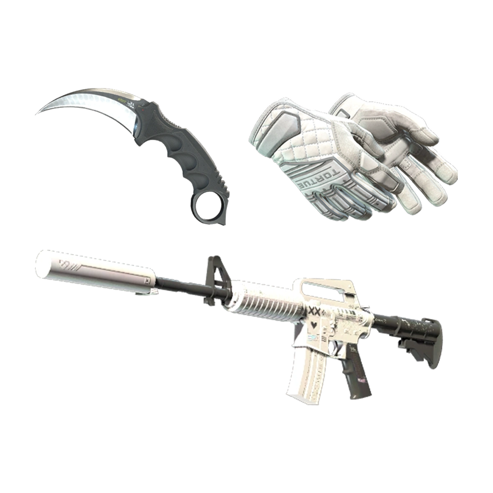

01
INDEX 001 / WHITE
White
เซ็ตโทนสีขาวที่ดูเรียบง่ายและคลาสสิก เน้นความสะอาดตาและการจับคู่สีที่ไม่เยอะเกินไป เหมาะกับคนที่ชอบ Loadout ที่ดูเรียบแต่ยังมีสไตล์
STYLEMinimal
PALETTEWhite / Silver
FINISHClean Contrast
MOODClassic

LOADOUT 001 — WHITE